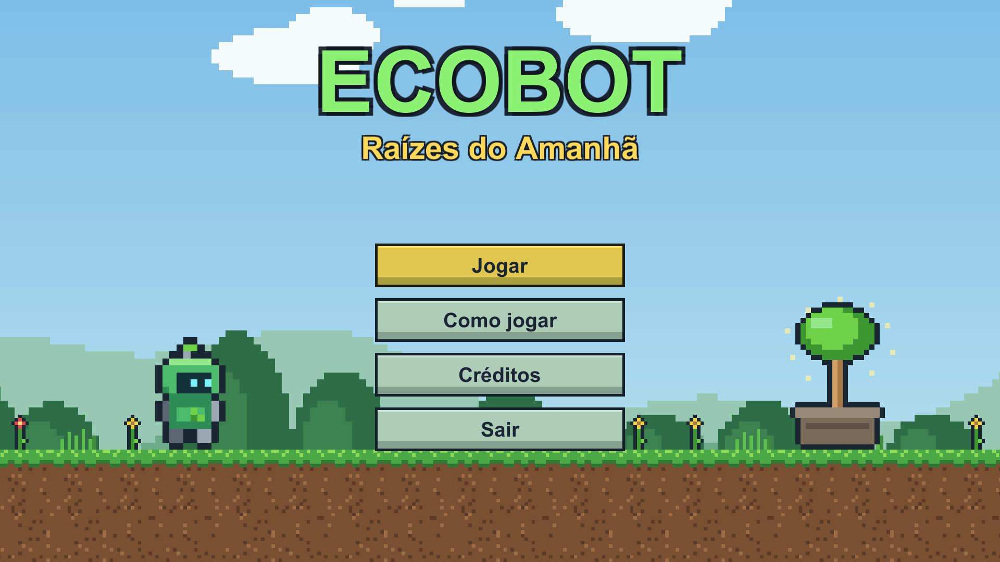
EcoBot: Raízes do Amanhã é um jogo de plataforma 2D desenvolvido na engine Unity 6 com programação em C#. O jogador controla Eco, um pequeno robô reciclador despertado pela última árvore da floresta de Verdália, que está sendo sufocada pelo lixo e pela fumaça da Fábrica Cinzenta. A missão de Eco é atravessar quatro regiões — floresta, caverna, fábrica e chaminé — recuperando as Sementes Ancestrais, reciclando as criaturas de lixo e plantando a Muda Ancestral ao final de cada fase.
O tema ambiental foi escolhido por dar sentido direto às mecânicas: coletar sementes representa recuperar a natureza; pisar nos inimigos de lixo representa reciclá-los; e a progressão do cenário, do verde da floresta ao cinza da fábrica, mostra visualmente a origem da poluição. A narrativa é simples, apresentada no menu inicial, nos títulos de cada fase e na tela final, mas contextualiza o personagem e o universo do jogo.
Este relatório apresenta os fundamentos teóricos aplicados no desenvolvimento, organizados nos tópicos solicitados, e relaciona cada conceito com a sua implementação prática no projeto.
| Item | Descrição |
|---|---|
| Gênero | Plataforma 2D (side-scroller e fase vertical) |
| Engine / linguagem | Unity 6 (6000.6) / C# |
| Plataforma alvo | Windows (executável), com suporte a teclado e gamepad |
| Conteúdo | 4 fases, 3 tipos de inimigo, 3 tipos de coletável, menu, pausa, game over e tela de vitória |
| Arte e áudio | Originais: 106 sprites em pixel art e 21 arquivos de áudio gerados proceduralmente por scripts próprios |
Jogos de plataforma têm como desafio central o deslocamento do personagem pelo espaço: saltar entre superfícies, evitar perigos, calcular distâncias e cronometrar movimentos. Por isso, a qualidade de um jogo do gênero depende diretamente da sensação de controle — o chamado game feel. Os princípios considerados no projeto foram:
O jogador precisa sentir que o personagem obedece imediatamente e de forma justa. Foram aplicadas técnicas consagradas no gênero:
Em vez de ajustar a força do pulo por tentativa e erro, a altura do pulo foi definida em blocos (3,4 blocos) e a velocidade inicial é calculada a partir dela pela equação de Torricelli, v = √(2·g·h). Com isso, as fases foram desenhadas conhecendo exatamente o que é alcançável: degraus de até 3 blocos, vãos de até 4 blocos andando e de até 6 blocos correndo.
Terreno sólido, plataformas atravessáveis, perigos e itens possuem cores e formas bem distintas, para que o jogador entenda o cenário sem precisar de explicação. Itens opcionais, como as folhas douradas (vida extra), foram colocados em lugares de maior risco, recompensando a exploração e a habilidade.
O planejamento partiu do conceito (um robô reciclador limpando um mundo poluído) e da lista de requisitos da disciplina. Cada requisito foi convertido em uma mecânica concreta, conforme a tabela abaixo.
| Requisito | Implementação no EcoBot |
|---|---|
| Andar | Movimento horizontal com aceleração, velocidade máxima de 5,5 unidades/s |
| Correr | Segurar Shift aumenta a velocidade para 9 unidades/s; necessário para atravessar vãos largos |
| Pular | Coyote time, jump buffer, altura variável e quique ao pisar em inimigos |
| Escalar | Cipós e escadas: o personagem entra no modo escalada, é centralizado na coluna e pode agarrar no ar |
| Obstáculos | Espinhos, abismos, lodo tóxico, plataformas que desabam e plataformas móveis |
| Coletáveis | Sementes (pontos), baterias (energia) e folhas douradas (vida extra) |
| Inimigos | Gosma de Lixo (patrulha), Ouriço de Sucata (não pode ser pisado) e Drone de Fumaça (voa) |
| Progresso | Estações de recarga (checkpoints), sistema de vidas e energia, pontuação e recorde |
Para organizar o desenvolvimento, o código foi dividido em módulos — núcleo, jogador, inimigos, elementos de fase, câmera e interface — cada um em uma pasta própria. Um script de Editor (menu EcoBot) foi criado para gerar automaticamente animações, prefabs e cenas a partir dos dados do projeto, o que permitiu alterar fases e reconstruí-las em segundos durante os testes.
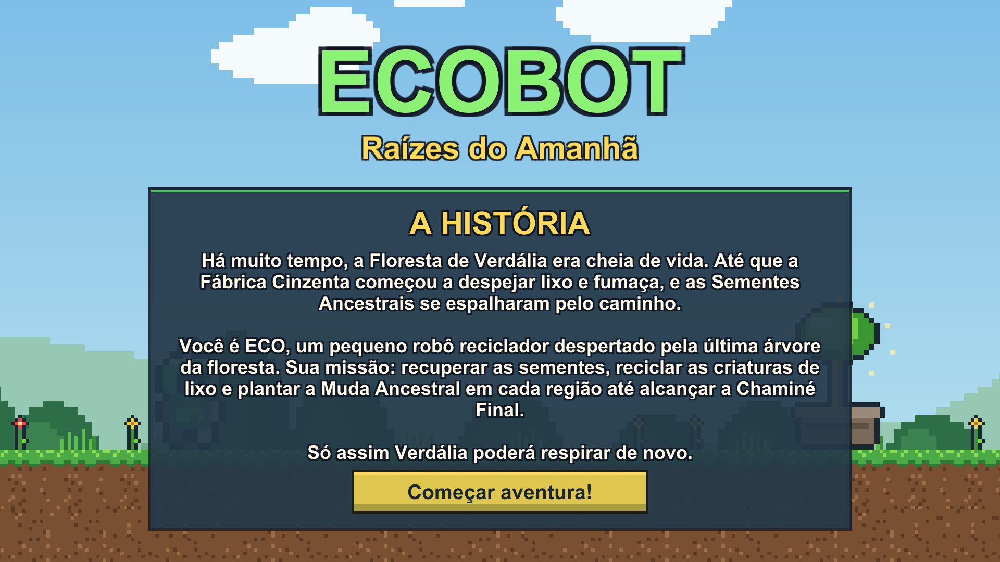
A progressão segue o modelo apresentar → praticar → combinar: cada mecânica nova aparece primeiro em um ponto seguro, acompanhada de uma placa de dica, e depois passa a ser cobrada junto com as habilidades aprendidas anteriormente. Assim, a dificuldade cresce sem que o jogador seja surpreendido por regras que ainda não conhece.
| Fase | Ensina | Cobra |
|---|---|---|
| 1. Floresta Despertar | Andar, pular, correr, escalar, pisar em inimigos, espinhos | Vão de 6 blocos que exige correr; plataformas sobre abismo |
| 2. Caverna das Raízes | Inimigo que não pode ser pisado; plataformas que desabam; agarrar cipós no ar | Corredor baixo com ouriços; travessia de cipó em cipó sobre o abismo |
| 3. Fábrica Cinzenta | Lodo tóxico, plataformas móveis horizontais e verticais, drones, descer de plataformas | Sequências com tempo certo sobre o lodo, com drones no caminho |
| 4. Chaminé Final | — (fase de revisão) | Subida vertical que mistura escadas, plataformas móveis e rachadas, drones e ouriços |
Outros cuidados de design: estações de recarga (checkpoints) foram posicionadas antes dos trechos mais difíceis, reduzindo a frustração; um tempo-alvo por fase gera bônus de pontuação e incentiva rejogar; e o bônus por coletar todas as sementes incentiva a exploração. A quarta fase muda a orientação do jogo para vertical, renovando a experiência no clímax.
As fases foram descritas em arquivos de texto (ASCII), em que cada caractere representa um elemento (# terreno, = plataforma, H cipó, o semente, s inimigo etc.). Essa abordagem facilitou ajustar distâncias e gerar mapas completos para revisão, como os apresentados abaixo.
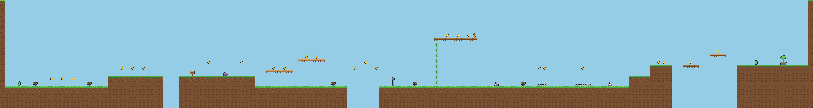
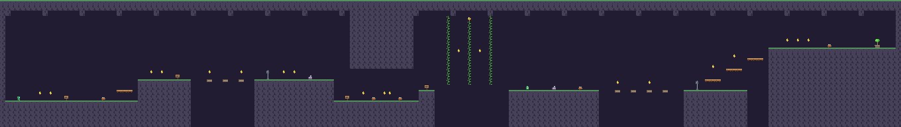
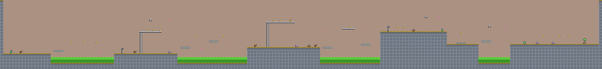
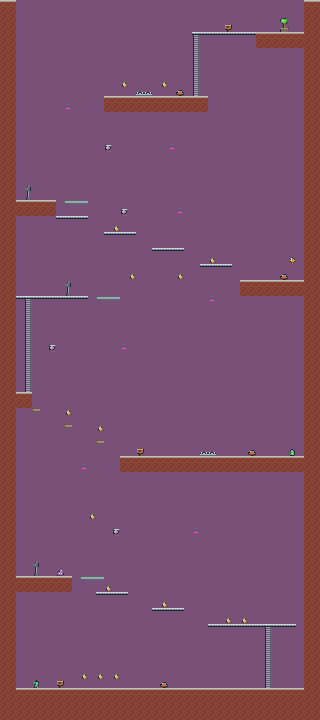
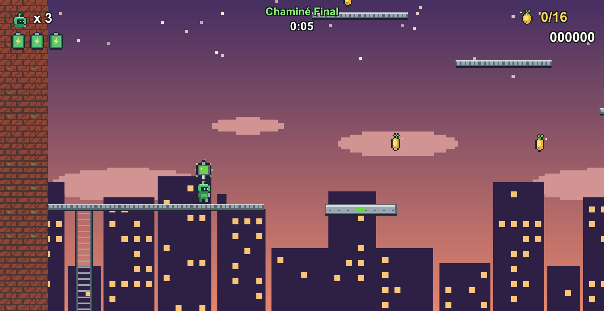
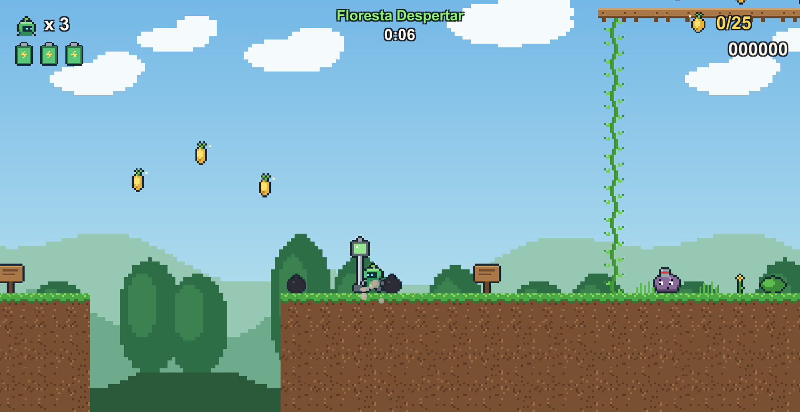
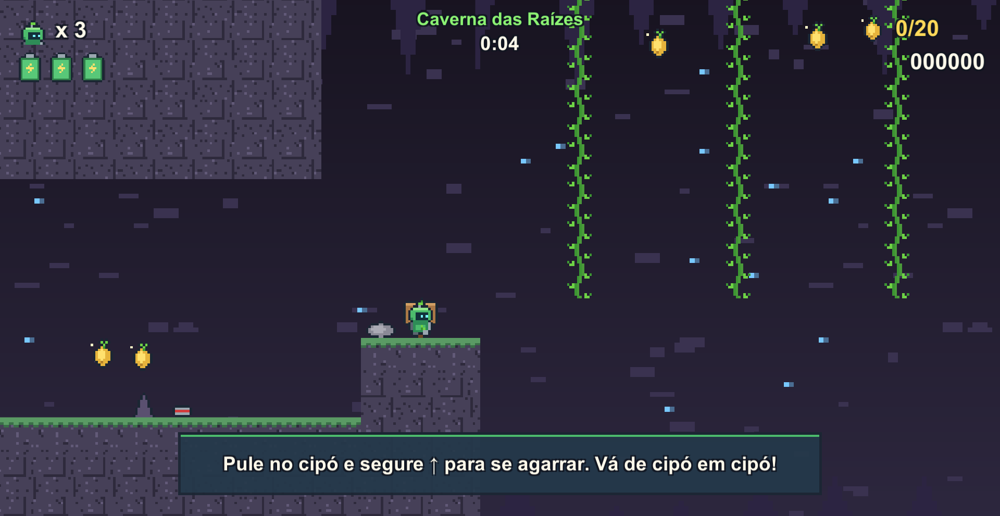
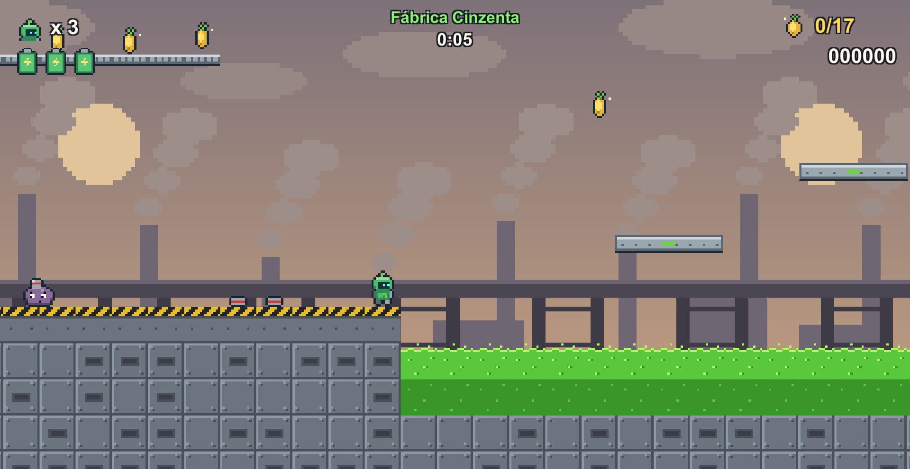
A interface (HUD) foi desenhada para ser lida em um relance, ocupando apenas os cantos da tela: no canto superior esquerdo ficam as vidas e as três células de energia; no centro, o nome da fase e o tempo; no canto superior direito, as sementes coletadas em relação ao total da fase e a pontuação. Mensagens de tutorial aparecem em um painel na parte inferior apenas quando o jogador se aproxima de uma placa.
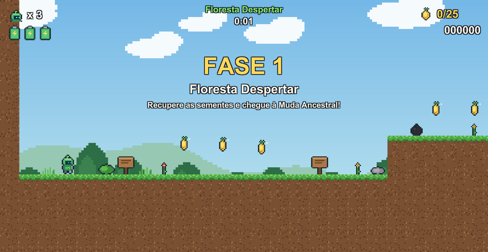
O princípio adotado para o feedback foi que toda ação importante deve responder em mais de um canal (visual e sonoro), confirmando ao jogador que a ação aconteceu:
| Ação | Feedback visual | Feedback sonoro |
|---|---|---|
| Coletar semente | Partículas douradas, texto flutuante “+100”, ícone do HUD pulsa | “Plim” de duas notas |
| Pular / aterrissar | Sprite estica e achata (squash & stretch), poeira | Salto / impacto |
| Pisar em inimigo | Inimigo achata, nuvem de partículas, “+200” | Pisão |
| Levar dano | Recuo, personagem pisca (invencível), tela treme, energia diminui | Som de dano |
| Checkpoint | Luz verde acende, texto “CHECKPOINT!” | Arpejo ascendente |
| Fim de fase | Confete, Eco comemora, painel com bônus | Fanfarra |
Os menus funcionam com mouse, teclado e gamepad: o botão selecionado fica destacado em amarelo, há som ao navegar e ao confirmar, e passar o mouse sobre um botão também o seleciona, mantendo o comportamento consistente entre os dispositivos.
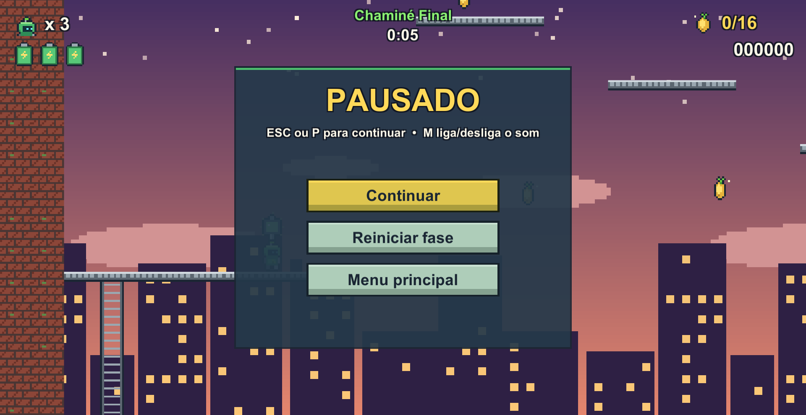
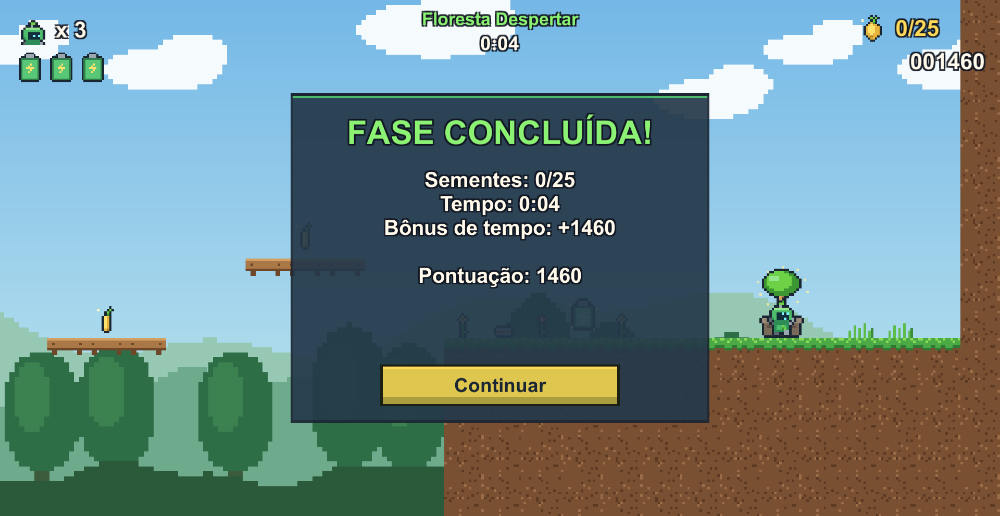
Toda a arte é original, em pixel art com blocos de 16×16 pixels, produzida por um script próprio (Tools/generate_sprites.py): personagem, três inimigos, itens, quatro conjuntos de tiles (floresta, caverna, fábrica e torre), decoração, fundos, ícones de interface e partículas. Na Unity, os sprites são importados com 16 pixels per unit (1 bloco = 1 unidade), filtro Point e sem compressão, preservando a nitidez. Essas configurações são aplicadas automaticamente por um AssetPostprocessor.
O cenário é construído com o sistema de Tilemap. O terreno usa TilemapCollider2D combinado com CompositeCollider2D, que une todos os blocos em um único colisor contínuo e evita que o personagem “tropece” nas junções entre blocos. As plataformas atravessáveis por baixo usam PlatformEffector2D no modo one-way, e os cipós/escadas usam um colisor do tipo gatilho (trigger).
Cada animação é um AnimationClip que troca o sprite quadro a quadro. O personagem Eco possui um Animator Controller com os estados Idle, Walk, Run, Jump, Fall, Climb, Hurt e Win, ligados por transições que dependem de parâmetros atualizados pelo código: Speed (velocidade horizontal), Grounded (no chão), VelY (velocidade vertical), Climbing e os gatilhos Hurt e Win. A animação de escalar só avança enquanto o jogador se move, usando o parâmetro ClimbMove como multiplicador de velocidade do estado.
Os inimigos têm estados de movimento e de derrota (a Gosma achata e o Drone cai ao serem pisados), e itens, checkpoints e a Muda Ancestral também são animados. Somam-se a isso dois planos de fundo por fase com efeito parallax (movendo-se em velocidades diferentes para criar profundidade) e efeitos de partículas (ParticleSystem) para brilho, poeira, impacto e confete.
| Estado | Quadros | Condição de entrada |
|---|---|---|
| Idle | 6 (respiração e piscar) | No chão e parado |
| Walk / Run | 4 + 4 | Speed > 0,1 / Speed > 7 |
| Jump / Fall | 1 + 1 | Fora do chão, subindo / descendo |
| Climb | 2 (vista de costas) | Climbing = verdadeiro |
| Hurt / Win | 1 / 2 | Gatilhos Hurt / Win |
A Unity executa, a cada quadro, uma sequência de métodos que formam o game loop. O projeto usa cada etapa com uma responsabilidade clara:
Physics2D.OverlapBox, movimento de plataformas e inimigos.GameManager (vidas, pontos, fluxo de cenas) e AudioManager são criados automaticamente antes da primeira cena (RuntimeInitializeOnLoadMethod) e sobrevivem às trocas de cena (DontDestroyOnLoad).GameManager dispara eventos (event Action) quando os valores mudam, a fase começa ou termina, e o HUD apenas escuta esses eventos — a interface não contém regras de jogo.Enemy (dano e pisão) com um “motor” de movimento (PatrolMover ou FlyingMover). Criar um inimigo novo é questão de combinar componentes.PlayerController alterna entre os estados Normal, Escalando, Ferido, Morto e Congelado, e o Animator espelha esses estados visualmente.GameInput isola teclado e gamepad do restante do código e funciona com os dois sistemas de entrada da Unity.Cálculo da velocidade do pulo a partir da altura desejada (em blocos):
float JumpVelocity =>
Mathf.Sqrt(2f * Mathf.Abs(Physics2D.gravity.y) * gravityScale * jumpHeight);Coyote time e jump buffer, executados no FixedUpdate:
// Update: guarda o momento em que o botão foi apertado
if (GameInput.JumpPressed) jumpBufferTimer = jumpBufferTime;
coyoteTimer = grounded ? coyoteTime : coyoteTimer - Time.deltaTime;
// FixedUpdate: pula se o botão foi apertado há pouco E está (ou esteve há pouco) no chão
if (jumpBufferTimer > 0f && (grounded || coyoteTimer > 0f)) Jump();Detecção do pisão no inimigo, comparando a posição dos pés do jogador com o centro do inimigo:
bool stomp = player.bounds.min.y >= enemy.bounds.center.y;
if (canBeStomped && stomp) { playerController.Bounce(); Defeat(); }
else health.TakeDamage(damage, transform.position);O áudio foi tratado como parte do feedback e da ambientação. Todas as músicas e efeitos são originais, sintetizados por um script próprio (Tools/generate_audio.py) a partir de ondas quadrada, triangular e de ruído, em estilo chiptune, coerente com a estética pixel art.
AudioManager faz fade ao trocar de música, evitando cortes bruscos entre cenas.AudioManager.Play(Sfx.X), com volume ajustável por efeito e leve variação aleatória de tom nos sons repetitivos (pulo, coleta), para que não se tornem cansativos.| Categoria | Sons |
|---|---|
| Movimento | Pulo, aterrissagem |
| Coleta | Semente, energia, vida extra |
| Combate / perigo | Dano, pisão, inimigo atingido, plataforma desabando |
| Progresso | Checkpoint, fase concluída, game over |
| Interface | Navegar, confirmar, pausa |
| Músicas | Menu, Fase 1, Fase 2, Fase 3, Fase 4, Vitória |
A tabela a seguir resume como os conceitos estudados na disciplina se materializaram no jogo:
| Conceito teórico | Onde aparece no EcoBot |
|---|---|
| Controle responsivo (game feel) | Coyote time, jump buffer, pulo variável e squash & stretch no PlayerController |
| Curva de dificuldade | Ordem das mecânicas nas quatro fases e placas de tutorial |
| Feedback multimodal | Partículas, textos flutuantes, som e HUD respondendo a cada ação |
| Game loop | Divisão de responsabilidades entre Update, FixedUpdate e LateUpdate |
| Máquina de estados | Animator do Eco e estados internos do PlayerController |
| Baixo acoplamento | Eventos do GameManager consumidos pelo HUD |
| Reutilização (prefabs e componentes) | Inimigos, itens e plataformas como prefabs combináveis |
| Narrativa ambiental | Tema da reciclagem presente nas mecânicas, inimigos e cenários |
ProcessTilemapChanges() e GenerateGeometry() antes de salvar, e adicionar uma verificação de segurança ao carregar a fase.Physics2D.IgnoreCollision) e restaurada assim que o corpo sai de dentro delas.FindObjectsByType com ordenação) passaram a ser obsoletas, e a captura de tela dependia de um módulo não habilitado. Ambos foram corrigidos ajustando o código e o manifesto de pacotes.O desenvolvimento do EcoBot: Raízes do Amanhã permitiu aplicar na prática os principais conceitos da disciplina de Game Development: a construção de controles responsivos, o planejamento de fases com progressão de dificuldade, a comunicação com o jogador por meio de HUD e feedback, o uso das ferramentas de sprites, Tilemap e animação da Unity, a organização do código em C# segundo o game loop e a inserção de áudio como parte da experiência.
O resultado é uma experiência jogável completa — menu, quatro fases, pausa, game over e tela final — que pode ser apresentada como peça de portfólio. Além do jogo em si, o projeto demonstra boas práticas de organização: código separado por responsabilidade, uso de eventos e componentes reutilizáveis, fases descritas em dados e um processo automatizado de construção das cenas e do executável.
Como próximos passos, o jogo poderia receber novas fases e um chefe final, salvamento de progresso entre sessões, opções de volume e de controles no menu e uma versão para navegador (WebGL), ampliando o alcance da publicação.
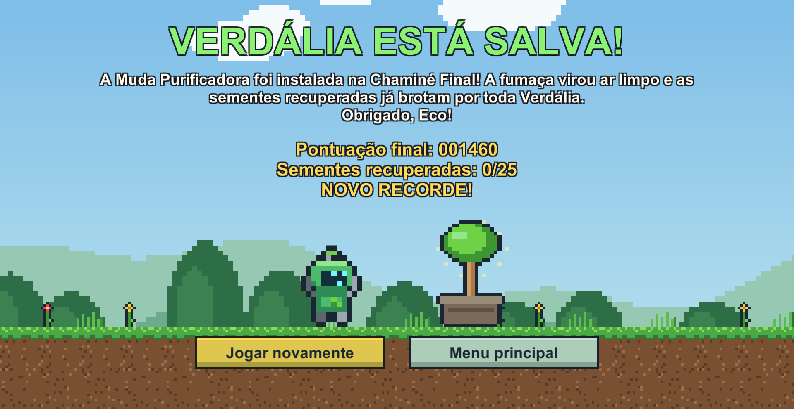
SWINK, Steve. Game Feel: a game designer's guide to virtual sensation. Burlington: Morgan Kaufmann, 2009.
SCHELL, Jesse. A arte de game design: o livro original. Rio de Janeiro: Elsevier, 2011.
UNITY TECHNOLOGIES. Unity Learn: get started. Disponível em: https://unity.com/pt/learn/get-started. Acesso em: nov. 2026.
UNITY TECHNOLOGIES. Unity Manual e Scripting API. Disponível em: https://docs.unity3d.com. Acesso em: nov. 2026.
SENTRY. Unity tutorial: developing your first Unity game — part 1. Disponível em: https://blog.sentry.io/unity-tutorial-developing-your-first-unity-game-part-1/. Acesso em: nov. 2026.